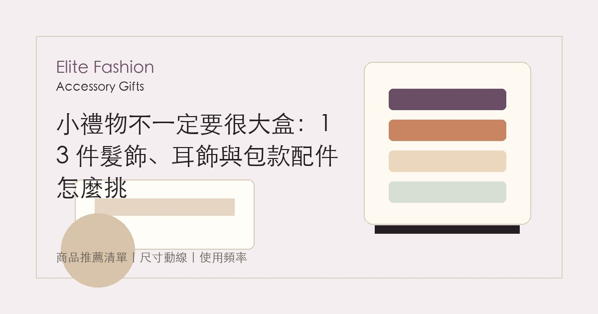
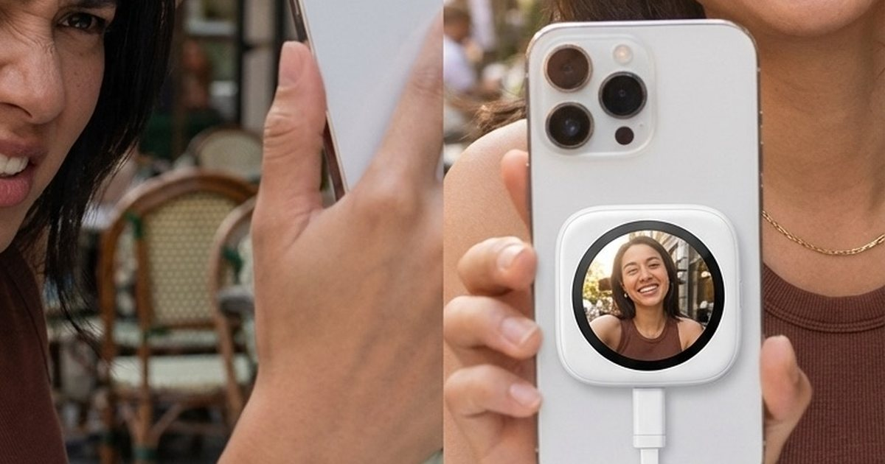
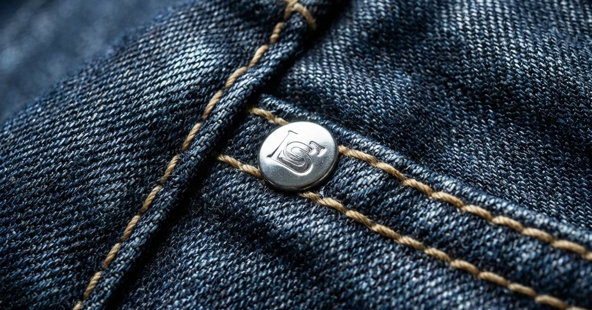
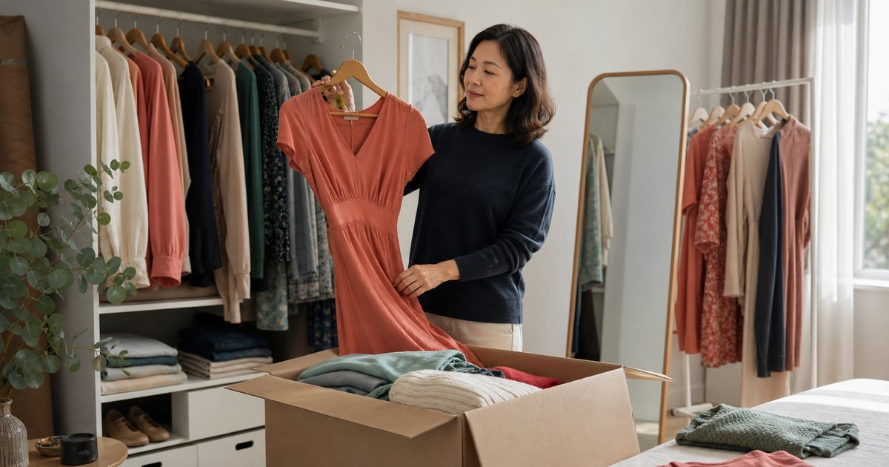

通勤衣櫥與鞋包選物指南
把通勤、會議、週末、旅行與日常整理成可重複穿搭的衣櫥順序，降低每天出門前的決策疲勞。
進入主題 →專注於如何將奢華與日常完美融合。我們提供實用的穿搭指南、精選單品推薦及混搭技巧， 幫助讀者在任何場合都能輕鬆展現不費力的優雅與個人風格，體現「精緻休閒」的生活態度。
先從完整策展頁掌握順序，再進入單篇文章。
先從真正會反覆發生的穿搭場景開始，再往單篇指南深入。
聚焦舒適、實穿與品味兼具的日常穿搭，這裡收錄本分類最新內容。

替伴侶或家人更新衣櫥時，先看尺寸、場合、穿著頻率和退換彈性，不要只憑自己的審美下單。
閱讀全文 →
把早晨儀容拆成唇色、底妝、眉眼和隨身補妝，十分鐘也能出門得體。
閱讀全文 →
用會議、日常通勤、婚禮與面試四種場合，整理男士衣櫥真正需要先補的單品。
閱讀全文 →
髮飾、耳飾、小包與墨鏡適合輕量送禮，也適合通勤與週末穿搭搭配，重點是材質、尺寸與使用場合。
閱讀全文 →
從關係距離、尺寸風險、日常使用率與客製細節，整理飾品與皮件送禮順序。
閱讀全文 →
從版型、材質、層次與場合順序，整理上班、旅行與週末都能轉換的穿搭選法。
閱讀全文 →以研究報告為基底，整理 48 隊新賽制、16 座主辦城市、爭冠熱門、經典對決與觀賽現場議題， 並在首頁一次規劃 6 大主題、36 篇後續文章藍圖。
進入專區 →
從 OOTD、咖啡廳打卡到約會合照，真正影響出片率的往往不是衣服，而是你能不能在按下快門前看見自己。解析 DA 如何讓 iPhone 後鏡頭自拍不再盲拍...
閱讀全文 →
當商務艙成為第二辦公室，你的褲子也該升級。深度評測機能商務神褲，在長途飛行後的舒適度與免燙表現，找出數位遊牧族的最佳戰袍...
閱讀全文 →Steve Jobs 只有黑色高領衫是有原因的。實測「膠囊衣櫥」挑戰，分析極簡穿搭如何釋放腦力，提升每日決策品質，重獲早晨的平靜...
閱讀全文 →
解析 2026 年職場穿搭趨勢。打造兼具舒適度與專業感的職場造型，應對混合辦公新生活...
閱讀全文 →
教您建構 2026 版微膠囊衣櫥。實現永續且極具個人風格的穿搭美學...
閱讀全文 →
深入解析 2026 年丹寧趨勢。探索科技面料如何賦予丹寧全新的奢華定義...
閱讀全文 →
想要擺脫厚重包袱，卻又擔心重要小物沒地方放？斜背包絕對是妳的時尚救星！它不僅解放雙手， 更成為現代女性日常穿搭的必備單品。無論是輕便通勤、甜美約會、自在旅行，還是在校園中的知性風格...
閱讀全文 →
春天是更新衣櫥的最佳時機。我們精選十件值得投資的經典單品，從優雅風衣到百搭針織， 每一件都能成為衣櫥中的長青單品，讓你輕鬆打造多變春季造型。
閱讀全文 →
在快節奏的現代生活中，極簡主義穿搭不僅是一種風格，更是一種生活態度。 學習如何用更少的單品創造更多可能性，在簡約中發現真正的自由與優雅。
閱讀全文 →週末是放鬆身心的時刻，穿搭也應該兼具舒適與時尚。從咖啡廳約會到戶外野餐， 從逛街購物到居家休閒，不同情境下的完美穿搭秘訣，讓你在任何場合都散發自信魅力。
閱讀全文 →
職場穿搭需要平衡專業形象與個人風格。從傳統金融業到創意產業， 不同行業的穿搭要求與技巧，幫助你在職場中展現自信與專業，同時保持個人魅力。
閱讀全文 →
好的配件能讓簡單的穿搭瞬間升級。從精緻的項鍊、優雅的手錶到質感包包，每一個細節都在訴說著 您的品味故事。學習如何選擇和搭配配件，讓您的造型更加完整且具有個人特色...
閱讀全文 →依更新時間整理，方便從主題分類頁直接進入所有相關文章。
用通勤、會議與週末場景整理衣櫥。
建議先整理常穿場景與既有單品，再補足鞋包、外套、襯衫或下身比例中最常缺的一環。
先控制顏色數量、材質一致性與鞋包狀態，再依場合調整外套、包款容量與配件份量。
通勤、會議、週末外出、旅行衣櫥、鞋包選物與膠囊衣櫥都可以從這裡開始。